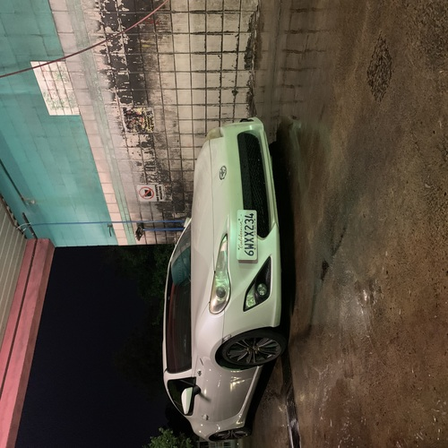

Marco Ramirez
Hello, I am a second year Art Major at the University of California Riverside! All my life I have had an eye for the arts especially fashion and photography. Although at the time I did not think of these two subjects as fashion and photography but instead as dressing up and taking pictures. I loved doing these things and my passion has not faded. To this day I have invested plenty of time and money into fashion because I love expressing my creativity and emotions through clothes. The way a single sweater or pair pants could make me feel so confident and brave is such a beautiful feeling. With respect to photography, I have always enjoyed taking pictures of moments that could later turn into memories. I love capturing my friends smiling or a moment that I feel will be a beautiful reflection of a good day.
e
Continuing to higher education I decided that the best option career wise was to go into a humanities major because I knew it would give the greatest benefit personally and with my future career. For Fashion I like to spend a couple hours a day reading different fashion magazines so I can read all of the latest trends that influencers are hopping on. Vogue, Harper's BAZAAR, I-D, Vanity fair, are all magazines that I like to keep up with daily. Apart from reading I also create fashion boards by seeing the runways from the plethora of fashion shows around the world. It helps me visualize what the future trends are going to be and plenty of times the clothes are reflectant of the current times. It could reflect the political beliefs or the future that many designers want to see. Many of the times many of the models are seen wearing gender-neutral clothing which is inspiring to many youth around the world. It helps them embrace the clothing for what it is, clothes. Anyone could wear whatever clothes they want to regardless of gender.
My Professional experience with fashion is styling friends, family, and myself. I go thrifting to choose the clothes because it helps with uniqueness and being as eco-friendly as possible. I usually ask what they like and what they would not wear so I could get them feeling empowered when they wear something they feel comfortable in yet out of their comfort zone. I spend hours mashing colors together and detailing the clothes if they need tailoring or cropping. In respect to photography the experience I have is photographing my friends in different areas and setting up homemade studios. Sometimes I style them and we drive to a location I picked out, then I capture pictures of them in daylight usually focusing on how to make their fashion the center of the photo. I also do group photos where I encourage them to be themselves and express themselves artistically doing certain poses that capture the chemistry between them. I get my inspiration for these shoots from films or paintings I may come across. I constantly watch new films so that I can get inspiration and every once in a while I try to visit different museums around my county.
Experience
Courtesy Clerk
• Customer Service Ambassador- Helped create an comfortable experience for both customers and team-members
• Took control of the Front End by making sure customers needs were met and maintained the cleanliness of the store
• Experience with bagging, memorizing the store catalogue, and retrieving carts
Franklin Leadership
• Oversaw transaction process for peer oriented concessions stand staff
• I gained an understanding in customer service skills and applied strong leadership talents and problem-solving skills to maintain team efficiency.
CLASS X Fashion
• Encouraged students to build genuine confidence within themselves and their self expression
• Motivated members to unleash their creativity and create artwork in the form of photography and fashion
• Spread kowledge about the fashion industry and how different designers utilize their visions in unique ways
Education
UC Riverside
Portfolio
